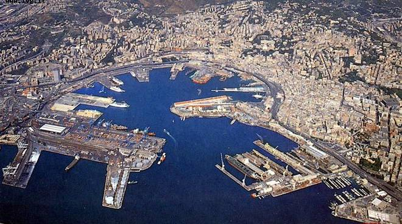

Genova, soprannominata "La Superba", è una delle città più affascinanti del Mediterraneo, un luogo dove storia, cultura e tradizione si intrecciano in un mosaico unico. Le sue origini risalgono all'antichità: già insediamento ligure, fu importante porto commerciale in epoca romana e divenne poi una delle più potenti Repubbliche Marinare del Medioevo, capace di competere con Venezia, Pisa e Amalfi per il dominio sul mare.
Durante il suo periodo di massimo splendore, tra il XII e il XVII secolo, Genova fu un centro nevralgico del commercio e della finanza europea. I suoi banchieri erano tra i più influenti del continente, e la città si arricchì di palazzi nobiliari, chiese e monumenti. La sua posizione strategica e la sua vocazione marittima la resero crocevia di scambi culturali e commerciali tra l’Europa, il Medio Oriente e il Nord Africa.
Genova è anche una città di contrasti: un centro storico tra i più grandi d'Europa, fatto di vicoli stretti e suggestivi (i famosi “caruggi”), si affianca a quartieri collinari, fortificazioni, e zone moderne proiettate sul mare. La città ha saputo reinventarsi nel tempo, mantenendo forte la sua identità, legata al lavoro, al mare e alla discrezione della sua gente.
Oggi Genova conserva un patrimonio culturale e architettonico di grande valore, testimone di un passato glorioso, ma è anche una città viva, autentica, talvolta ruvida, che conquista chi sa guardare oltre la sua facciata austera. Una città da scoprire poco a poco, con occhi curiosi e passo lento.

©creator page-Scali gabriel